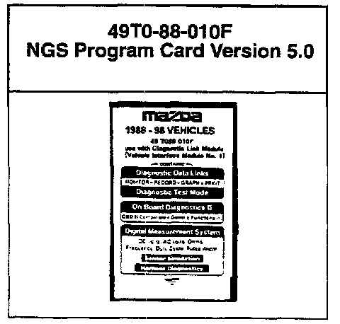

Star Tester - New Version Program Cards
Bulletin No. 001/98Issued 02/23/98
Revised
Category
ST
Applicable Model/s
ALL
Subject
NEW V5.0 NGS CARD (49T0-88-010F) AND REPROGRAMMING OF V3.0 (49T0-88-010D)
DESCRIPTION
Per Service Bulletin Cat. ST 004/97, issued 10/10/97, your service department currently has two reprogrammable New Generation Star (NGS) cards, an older Version 3.0 program (P/N 49T0-88-010D) and a current Version 4.0 program (P/N 49T0-88-010E). On March 25, 1998, V4.0 will supersede to V5.0 (P/N 49T0-88-010F) as a new Mazda Required Tool (MRT) to properly service MAZDA vehicles.
Mazda's tool vendor, America Kowa Seiki, Inc. (AKS), is offering a reprogramming service which will update your older Version 3.0 to Version 5.0 at a substantial savings. Your V3.0 card must be received by AKS no later than March 4, 1998. Follow the REPROGRAMMING PROCEDURE on page two to participate in this service.
Note:
If your service department chooses not to participate, or cannot participate in this reprogramming service, a new V5.0 card will be automatically shipped to your service department.
APPLICATION
This card is used with your NGS Tester to properly service 1988 - 1999 Mazda Vehicles. Refer to your Workshop Manual for the application of this card and tester.
PRICING
The price for the V5.0 reprogramming exchange is $216.09 plus shipping costs. If AKS does not receive your V3.0 card, or you miss the March 4, 1998 cut-off date, the new card price is $316.57 plus shipping costs.

SHIPPING AND BILLING INFORMATION
Your NGS card with V5.0 will be shipped to you by March 25, 1998. Your parts account will be billed for the appropriate amount. DO NOT SEND PAYMENT TO AMERICA KOWA SEIKI, INC.
REPROGRAMMING PROCEDURE
Please use the following procedure to update your NGS Version 3.0 card to Version 5.0 card.
STEP 1:
Carefully inspect your V3.0 card for signs of damage (i.e. dents, cracks, etc.), since America Kowa Seiki will only accept cards that are reprogrammable.
STEP 2:
Package your V3.0 card in a small box with your Service Manager's business card taped to the NGS card. Send the package to the following address:
America Kowa Seiki, Inc.
20013 S. Rancho Way
Rancho Dominguez, CA. 90220
RE: Mazda NGS Card Reprogramming
STEP 3:
Send your package by Federal Express 2 day or UPS Blue label prepaid. It must arrive at America Kowa Seiki, Inc. by March 4, 1998.
Note:
DO NOT SEND YOUR V4.0 NGS CARD! Use this V4.0 card until your new V5.0 card arrives at your service department.
Please contact your District Customer Support Manager, America Kowa Seiki (800-824-9655 or 310-638-1000, ext. 211.) or the Tools/Equipment Manager (714-442-6531) if you have any questions regarding this information.